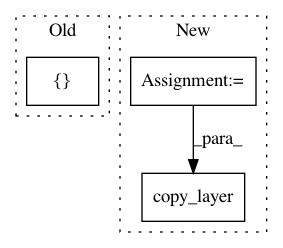

0a80b9769115d291f15c244429793eda4cb8ecad,tests/test_layer_transformer.py,,test_conv_to_wider_layer,#,60
Before Change
optimizer=Adadelta(),
metrics=["accuracy"])
a2, b2 = conv_to_wider_layer(a, b, 5)
model2 = Sequential([a2, b2])
model2.compile(loss=categorical_crossentropy,
optimizer=Adadelta(),
metrics=["accuracy"])
After Change
new_input = Input(shape=get_int_tuple(model.inputs[0].shape[1:]))
temp_tensor = new_conv1(new_input)
temp_tensor = new_bn1(temp_tensor)
temp_tensor = Activation("relu")(temp_tensor)
temp_tensor = new_conv2(temp_tensor)
temp_tensor = copy_layer(model.layers[5])(temp_tensor)
temp_tensor = Activation("relu")(temp_tensor)
model2 = Model(inputs=new_input, outputs=temp_tensor)
random_input = get_conv_data()
In pattern: SUPERPATTERN
Frequency: 4
Non-data size: 3
Instances
Project Name: keras-team/autokeras
Commit Name: 0a80b9769115d291f15c244429793eda4cb8ecad
Time: 2017-12-28
Author: jhfjhfj1@gmail.com
File Name: tests/test_layer_transformer.py
Class Name:
Method Name: test_conv_to_wider_layer
Project Name: keras-team/autokeras
Commit Name: 99773d6efd4c081424bdbc3ee9871cdf3e1bdb5c
Time: 2018-01-05
Author: jhfjhfj1@gmail.com
File Name: autokeras/graph.py
Class Name: Graph
Method Name: to_concat_skip_model